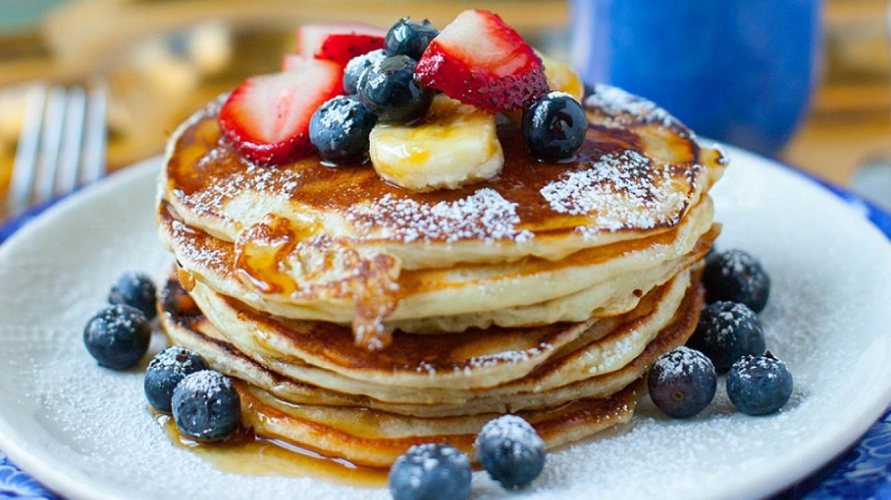

Pancakes
Pancake is one of the most familiar food that is often made for breakfast.
Eventhough it is relatively easy to make, many people don't know how to make it and often buys instant mixes or doesn't make it at all.
With this recipe, you would be able to make a good pancake and start your day with better breakfast.

Ingridients (Based on 4 servings):
- 1 large egg
- 1 cup milk
- 1 cup all-purpose flour (spooned and leveled)
- 2 tablespoones sugar
- 2 teaspoones baking powder
- ½ teaspoon salt
- 2 tablespoons un salted butter(melted) or vegitable oil
- 1 tablespoon vegitable oil
- toppings, e.g. syrup, cream, blueberry
Method:
- Preheat oven to 200°C; have a baking sheet or heatproof platter ready to keep cooked pancakes warm in the oven.
In a small bowl, whisk together flour, sugar, baking powder, and salt; set aside.
- In a medium bowl, whisk together milk, butter (or oil), and egg. Add dry ingredients to milk mixture; whisk until
just moistened (do not overmix; a few small lumps are fine).
- Heat a large skillet (nonstick or cast-iron) or griddle over medium. Fold a sheet of paper towel in half, and moisten
with oil; carefully rub skillet with oiled paper towel.
- For each pancake, spoon 2 to 3 tablespoons of batter onto skillet, using the back of the spoon to spread batter into
a round (you should be able to fit 2 to 3 in a large skillet).
- Cook until surface of pancakes have some bubbles and a few have burst, 1 to 2 minutes. Flip carefully with a thin spatula,
and cook until browned on the underside, 1 to 2 minutes more. Transfer to a baking sheet or platter; cover loosely with aluminum foil,
and keep warm in oven. Continue with more oil and remaining batter. (You'll have 12 to 15 pancakes.) Serve warm, with desired toppings.